I build agent
pipelines that ship, not slideware.
Maithresh Vaddi — AI/ML Engineer & Backend Developer
Final-year B.Tech CSE student at KMIT Hyderabad. I design RAG reliability systems, MCP tool-routing agents, and automation platforms — and I can walk you through every line of every one of them, because I wrote every line.

No inflated claims. Every line here is something I can defend in an interview.
I'm a final-year B.Tech CSE undergrad at KMIT Hyderabad, and most of what's below happened outside class — evenings and weekends spent on agentic RAG architecture: retrieval pipelines, MCP-based tool orchestration, multi-agent systems that route between reasoning and live data.
Ten of those are solo builds, shipped as standalone repos — not notebooks, not one-off demos. A production RAG reliability pipeline with a claim-verification loop. A CrewAI resume-matching tool that runs fully local by default. Thirteen n8n/Make.com/RPA workflows I built, broke, and fixed myself, which taught me more than the building did. Two group platforms too, where I owned the ML-integration layer.
Right now I'm hardening TrustRAG's claim-verification and adaptive-recovery loop, and pushing CareerOS-Pro toward Docker-based production deployment with per-agent health monitoring.
- Simple beats clever. I rebuilt DocuChat from a multi-agent system back down to one agent once the extra complexity stopped paying for itself.
- Ship it, don't demo it. Every project on this page is a real repo with a README, not a notebook I ran once.
- If I can't defend it in an interview, it doesn't go on this page.
Technical stack
Ordered by what I actually use day to day, not by what looks impressive on paper.
LLM / Agentic AI
Automation
Backend & Data
Cloud, ML & Tools
AWS / K8s / Jenkins: coursework + hands-on labs, no named production deployment.
Featured projects
Five builds I'd actually walk you through in an interview. Hover a row for the details.
Standard RAG systems fail silently — this doesn't. A local-first reliability loop: hybrid retrieve (dense BGE-small + BM25 + RRF) → grounded generation → claim decomposition fused with NLI verification in one call → SHA-256 + temporal-window evidence audit → reliability scoring against configurable thresholds → if it fails, one bounded LangGraph recovery round → grounded answer or explicit ABSTAIN. Runs entirely on Ollama/llama.cpp — no API keys required.
Agentic RAG app for chatting with PDFs — now with a full Gradio front end. Per-question choice of provider (llama.cpp local-default, Ollama, or Gemini), persistent SQLite conversation history, a retrieve_multi tool for compound questions, and dynamic routing to live Tavily search via MCP.
Compares a resume against a job description and produces an evidence-focused match report — no invented skills, no guessed experience. Runs locally by default (Ollama) with optional Gemini fallback. Accepts PDF, DOCX, TXT, and Markdown, across both CLI and Gradio UI.
Career-intelligence platform aggregating listings from JSearch, Adzuna, Remotive, RemoteOK, Arbeitnow, plus a free company-career-page scraper. Deterministic normalization and two-stage dedup keep the LLM out of the parsing path; a LangGraph state machine routes match-explanation across a multi-provider fallback chain.
Two agents orchestrating Composio-hosted MCP tools via LangChain: skill-to-career mapping with live India job search (JSearch API), and compensation research scraping Glassdoor, AmbitionBox, and Levels.fyi into salary bands.
AI Blog Writing Crew
Single-file 3-agent CrewAI pipeline (Content Strategist → Blog Writer → Editor) turns one topic into a finished, edited blog post saved as markdown.
AI Game Development Crew
3-agent CrewAI pipeline (Designer → Developer → QA) turns a one-line idea into a playable 2D game, packaged to WebAssembly via pygbag and shared through ngrok.
MCP Email Inbox Summarizer
Gmail triage agent — classifies unread mail URGENT / NEEDS REPLY / FYI and drafts replies via Composio MCP. Read/draft only, never auto-sends.
MCP CourseFinder Agent
Merges Tavily + YouTube MCP results into one structured learning path per topic, with a no-hallucination system prompt grounding every recommendation in tool output.
F5-TTS Podcast Generator
Reproducible Kaggle notebook running F5-TTS voice-cloning inference behind a Gradio UI.
MockInterview — GenAI Transcription System
Full-stack transcription platform (React + TypeScript, Flask + PyTorch) with three modes: audio→text via a Wav2Vec2+BERT-style model trained from scratch, video→text via a custom AV-HuBERT-inspired multimodal model, and video→text via OpenAI Whisper.
FoodMunch
Responsive restaurant landing page. Kept for completeness — not my target direction.
Automation & workflow engineering
Thirteen workflows across three platforms — all built, broken, and fixed by me, solo.
AI Podcast Generator — PodEase Pro
Idea-to-published-audio pipeline. A Lovable frontend triggers a webhook into n8n, which routes the topic through Gemini for script generation, then Murf AI for text-to-speech, returning the finished file via webhook response.
n8n Workflow Suite
Internship Applier, LinkedIn Job Tracker, News Summarizer, a Telegram Shopping Assistant (Groq Whisper voice input + Redis memory), Weather Daily Planner, Learning Path Generator Agent, and more — built and debugged solo.
Make.com Automation Suite
A Google Sheets → Gemini content-generation pipeline, and a Telegram-triggered AI resume evaluator that parses a Google Doc, scores it via an AI Agent module, and returns results by Telegram/Email.
Automated Email Reminder Bot
Loops through Sheets records, runs date-diff conditional logic to flag overdue items, sends reminder emails, and writes status back — wrapped in Try-Catch so one bad row doesn't kill the run.
Group AI platforms
Two builds where I owned the ML-integration layer on a four-person team.
Investigators create cases, upload evidence, and get computer-vision + multimodal AI analysis with an LLM chat interface over case data.
.pth, loaded locally for PyTorch inference in Flask; integrated YOLO detection; outputs feed Gemini to auto-generate reports.Full-stack handwritten signature verification via image similarity.
.h5) for inference, handled image preprocessing and Bootstrap frontend fixes.Education
Keshav Memorial Institute of Technology (KMIT)
B.Tech, Computer Science and Engineering2023 — 2027
Let's build something that ships.
Open to AI/ML, GenAI, Agentic AI, and Automation internship roles. Based in Hyderabad — happy to go remote.
$ git log --author=maithresh --all --oneline | wc -l · live, last 12 months